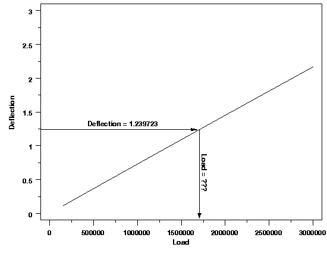

|
4.
Process Modeling
4.6. Case Studies in Process Modeling 4.6.1. Load Cell Calibration
|
|||
| Using the Model | Now that a good model has been found for these data, it can be used to estimate load values for new measurements of deflection. For example, suppose a new deflection value of 1.239722 is observed. The regression function can be solved for load to determine an estimated load value without having to observe it directly. The plot below illustrates the calibration process graphically. | ||
| Calibration |  | ||
| Finding Bounds on the Load | From the plot, it is clear that the load that produced the deflection of 1.239722 should be about 1,750,000, and would certainly lie between 1,500,000 and 2,000,000. This rough estimate of the possible load range will be used to compute the load estimate numerically. | ||
| Obtaining a Numerical Calibration Value | To solve for the numerical estimate of the load associated with the observed deflection, the observed value substituting in the regression function and the equation is solved for load. Typically this will be done using a root finding procedure in a statistical or mathematical package. That is one reason why rough bounds on the value of the load to be estimated are needed. $$ \begin{eqnarray} 1.239722 & = & 0.673618\times10^{-3} \\ & + & (0.732059\times10^{-6})L \\ & - & (0.316081\times10^{-14})L^2 \\ & \Downarrow & \\ L & = & 1705106 \end{eqnarray} $$ | Which Solution? | Even though the rough estimate of the load associated with an observed deflection is not necessary to solve the equation, the other reason is to determine which solution to the equation is correct, if there are multiple solutions. The quadratic calibration equation, in fact, has two solutions. As we saw from the plot on the previous page, however, there is really no confusion over which root of the quadratic function is the correct load. Essentially, the load value must be between 150,000 and 3,000,000 for this problem. The other root of the regression equation and the new deflection value correspond to a load of over 229,899,600. Looking at the data at hand, it is safe to assume that a load of 229,899,600 would yield a deflection much greater than 1.24. |
| +/- What? | The final step in the calibration process, after determining the estimated load associated with the observed deflection, is to compute an uncertainty or confidence interval for the load. A single-use 95 % confidence interval for the load, is obtained by inverting the formulas for the upper and lower bounds of a 95 % prediction interval for a new deflection value. These inequalities, shown below, are usually solved numerically, just as the calibration equation was, to find the end points of the confidence interval. For some models, including this one, the solution could actually be obtained algebraically, but it is easier to let the computer do the work using a generic algorithm. $$ \begin{eqnarray} 1.239722 & > & f(L;\hat{\vec{\beta}}) + t_{0.975,37} \cdot \hat{\sigma}_p \\ & \Downarrow & \\ L & > & 1704513 \end{eqnarray} $$ $$ \begin{eqnarray} 1.239722 & < & f(L;\hat{\vec{\beta}}) - t_{0.975,37} \cdot \hat{\sigma}_p \\ & \Downarrow & \\ L & < & 1705697 \end{eqnarray} $$ The three terms on the right-hand side of each inequality are the regression function (\(f\)), a t-distribution multiplier, and the standard deviation of a new measurement from the process (\(\hat{\sigma}_p\)). Regression software often provides convenient methods for computing these quantities for arbitrary values of the predictor variables, which can make computation of the confidence interval end points easier. Although this interval is not symmetric mathematically, the asymmetry is very small, so for all practical purposes, the interval can be written as $$ 1705106 \pm 593 $$ if desired. | ||

{kind=link}